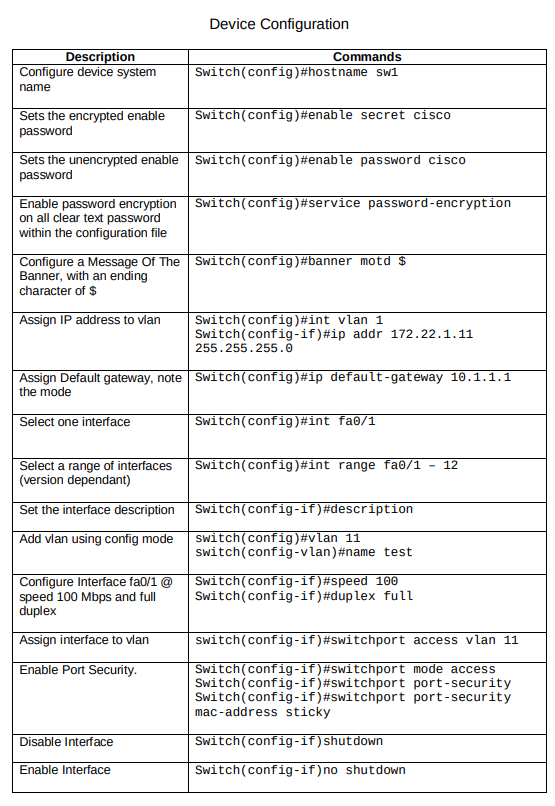

Cisco Modes
Keyboard Shortcuts
Device Configuration
Switch

Router


The following guidelines are commands and their descriptions:
Configure Networking
The following includes basic configure networking commands and their descriptions:
Enter interface configuration mode:
(config)# interface g1/0
Human-readable link description:
(config-if)# description Link to Some host
Add IPv4 address to interface:
(config-if)# ip address 10.23.42.5 255.255.0.0
Add IPv6 address to interface:
(config-if)# ipv6 address 2001:41d0:8:e115::ccc/64
Add IPv4 address to interface:
(config-if)# ip address 10.23.42.5 255.255.0.0
Add IPv6 address to interface:
(config-if)# ipv6 address 2001:41d0:8:e115::ccc/64
Overwrite MAC address:
(config-if)# mac address 1234.5678.90AB
Remove MAC overwrite:
(config-if)# no mac address
Add IPv6 address based on MAC to interface:
(config-if)# ipv6 address 2001:41d0:8:e115::/64 eui-64
Get IPv4 address via dhcp:
(config-if)# ip address dhcp
Get IPv6 address (and default route) via autoconfig:
(config-if)# ipv6 address autoconfig [default]
Set hostname transmitted as dhcp client to SW2:
(config-if)# ip dhcp client client-id asccii SW2
Configure both interfaces at once:
(config)# interface g1/0 - 2
En- or Disable interface. Often shutdown is the default:
(config-if)# [no] shutdown
Set 10.23.42.1 as the default gateway:
(config)# ip default-gateway 10.23.42.1
Add static route via next hop or interface:
(config)# ip route 10.20.30.0 255.255.255.0 {1.2.3.4,e0/0} [ad]
You can also set both:
(config)# ipv6 route 2001:41d0:8:e115::/64 [g1/1] [next hop]
Create a static host entry on this device:
(config)# ip host the-space.agency 178.32.222.21
Globally enable ipv6 routing:
(config)# ipv6 unicast-routing
Privilege Commands
Basic Network Troubleshooting
Show interfaces mac, bandwidth, mtu, packet stats, etc.: # show interfaces [if-name]
Show routes and how they were learned: # show ip[v6] route [static]
Show interfaces ip/arp/icmp/nd... configuration: # show ip[v6] interface [if-name]
Only show ip, status, and operational status: # show ip[v6] interface brief [if-name]
Similar to show ip int brief, w/ cidr, w/o ok/method: # show protocols [if-name]
Show the MAC address table of a switch: # show mac-address-table
Clear the dynamically learned mac address table entries: # clear mac address-table [dynamic]
Show {ip,ipx,appletalk}-mac bindings: # show arp
Show ip-mac bindings: # show ip arp [{ip, mac, if-name}]
Remove arp entry for ip: # clear [ip] arp 192.168.1.1
Show debug messages when receiving/sending arp packets: # debug arp
Disable all previously enabled debugs: # undebug all
Show neighbor discovery table cache: # show ipv6 neighbors
Troubleshoot Networks with Span
Define SPAN #23 output as g1/2: (config)# monitor session 23 destination interface g1/2
Define SPAN #23 input as g1/1: (config)# monitor session 23 source interface g1/1 {rx,tx,both}
Show all configured SPANs: # show monitor
Port Security
Port security terms of violation:
Troubleshooting Port Security
Layer2 Switch Vlan Config
Layer3 Switch Vlan Config
Router (on a Stick) Vlan Config
Troubleshoot Vlans on a Switch
STP
Troubleshoot STP
Etherchannel (Link Aggregation)
Troubleshoot Etherchannel (Link Aggregation)
Configure a Serial
ACLs
Interface ACLs
Troubleshooting ACLs
NAT
SNAT
DNAT
PAT
Troubleshooting NAT
DHCP Server
Troubleshooting DHCP
HSRP
SLAs
Troubleshooting HSRP
Device Management
Set hostname to R1:
(config)# hostname R1
Set enable password:
(config)# enable password
Same but with hashing:
(config)# enable secret
Very weak encryption of passwords:
(config)# service password-encryption
Copy something from flash to tftp. Wizard asks for details. It works both ways:
# copy flash0: tftp:
# copy running-config startup-config:
# write
# erase startup-config:
# write erase
Restart the device and load the startup-config:
# reload
Copy running-config to a tftp server. (interactive):
# copy running-config tftp:
Merge source config into the running config:
# copy running-config
Initial configuration dialog:
# setup
ios, bootloader and hardware infos, uptime, configuration register:
# show version
Firmware Management
Boot filename.bin from flash memory:
(config)# boot system flash:filename.bin
Boot filename.bin from tftp:
(config)# boot system tftp://10.20.30.40/filename.bin
Boot ROM monitor as a backup:
(config)# boot system rom
Set the 16bit Configuration Register value used after reboot:
(config)# config-register 0x2342
Lists available file systems:
# show file systems
List fs content and free space:
# show flash0:
License Management
Save a copy of all licenses:
# license save flash:licenses.lic
Install a license:
# license install flash0:license.xml
Activate evaluation right-to-use license:
(config)# license boot module technology-package
Reboot to activate the package and right to use license:
# reload
Deactivate a technology-package:
(config)# license boot module technology-package disable
Reboot without that technology-package:
# reload
Remove license from the license storage:
# license clear
Remove the no longer needed line from the config:
(config)# no license boot module technology-package disable
Active licenses:
# show licenses
Technology pack and feature licenses supported:
# show license feature
Product id and serial number needed to order licenses:
# show license udi
Reset Password
Show the configuration register in rom monitor:
> confreq
Set the configuration register in rom monitor to not load startup-conf:
> confreq 0x2142
Reboot in rom monitor:
> reset
Overwrite forgotten password:
(config)# enable secret foobar
Do load startup-config after boot again:
(config)# config-register 0x2102
Telnet / Console
Make sure to include legal terms to sound smart:
(config)# banner login "Insert snarky banner."
Set Login Banner:
(config)# banner motd "Insert snarky banner."
Enter config mode for vty 0 to 4 (up to 15 allowed):
(config)# line vty 0 4
Enter config mode for the console port:
(config)# line console 0
Require login on telnet/console connection:
(config-line)# login
Enable Telnet and set vty login password:
(config-line)# password
Set ACL to limit inbound IPs allowed to access vty:
(config-line)# access-class 10 in
Overwrite the used ACL, only one ACL per vty + direction!:
(config-line)# access-class 42 in
Autologout after 10 Minutes:
(config-line)# exec-timeout 10
Require login on telnet/console connection via local users:
(config-line)# login local
Create local user with encrypted password:
(config)# username h.acker secret C1sco123
SSH
Required to generate SSH keys:
(config)# hostname Fooba
Required to generate SSH keys:
(config)# ip domain-name example.com
Generate keys like it's 1995! Potentially takes forever:
(config)# crypto key generate rsa modulus 2048
Force SSHv2:
(config)# ip ssh version 2
Force ssh, disable telnet:
(config-line)# transport input ssh
SSH version, timeout time, auth retries:
# show ip ssh
List of active connections:
# show ssh
Clock
Show time and date:
# show clock
Update clock:
(config)# clock set 23:50:42 10 Jan 2017
Update timezone to EST:
(config)# clock timezone EST 0
Configure upstream ntp server:
(config)# ntp server 10.20.30.40
Enable ntp server:
(config)# ntp master [stratum]
ntp connections:
# show ntp associations
Disable Unused Services
Show open ports:
# show control-plane host open-ports
Stop the http server (but not https):
(config)# no ip http server
Stop CDP:
(config)# no cdp enable
Radius
Local backup user:
(config)# username password
Enable aaa services:
(config)# aaa new-model
Add and define Radius conf:
(config)# radius server
Use this hostname/ip of server:
(config-radius-server)# address ipv4 [auth-port ]
Radius PSK:
(config-radius-server)# key
Create authentication group:
(config)# aaa group server radius
Using the radius config:
(config-sg-radius)# server name
Allow that group and local users in:
(config)# aaa authentication login group local
TACACS+
Local backup user:
(config)# username password
Enable aaa services:
(config)# aaa new-model
Add and define TACACS conf:
(config)# tacacs server
Multiple possible:
(config)# aaa group server tacacs+
Allow that group and local users in:
(config)# aaa authentication login group local
Syslog
Log to this syslog server (name or ip):
# logging 10.20.30.40
Only log messages with min. informational sev:
# logging trap informational
SNMP
Contact email:
(config)# snmp-server contact admin@example.com
Where is the device:
(config)# snmp-server location RZ-Hamburg
Add community:
(config)# snmp-server community [ro, rw]
SNMP notifications recipient:
(config)# snmp-server host 10.20.30.4
CDP - Cisco Discovery Protocol
Enables cdp globaly and on all interfaces (default):
# [no] cdp run
Enable cdp on an interface:
# (config-if)# [no] cdp enable
List connected cisco devices (name, local/remote port, [ip] ..):
# show cdp neighbors [detail]
LLDP - Link Layer Discovery Protocol
Enables lldp globaly and on all interfaces:
# [no] lldp run
Enable lldp packet transmission on interface:
(config-if)# [no] lldp transmit
Enable lldp packet reception on interace:
(config-if)# [no] lddp receive
PPP
Create users for pap auth:
(config)# username fnord password pass
Baud rate. Only on DCE cable:
(config-if)# clock rate 125000
Logical speed used for routing cost calc, RSVP:
(config-if)# bandwidth 125
Default is HDLC:
(config-if)# encapsulation ppp
Require remote to authenticate via pap:
(config-if)# ppp authentication pap
Authenticate to remote pap:
(config-if)# ppp pap sent-username fnord password pass
Required for CHAP, used as chap client username:
(config)# hostname routy1
Create users for chap auth for routy2:
(config)# username routy2 password foobar
Remove in favor of chap:
(config-if)# no ppp authentication pap
Remove in favor of chap:
(config-if)# no ppp pap sent-username fnord password pass
Require remote to authenticate via chap:
(config-if)# ppp authentication chap